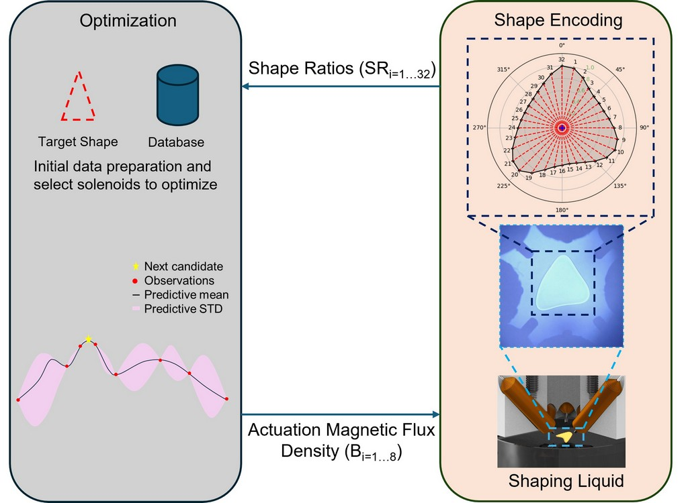
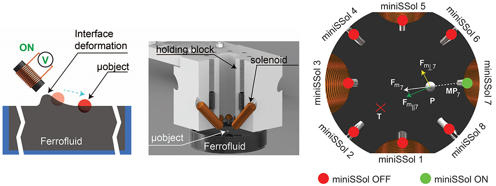

Robotic Systems Development
Magnetic Liquid-Driven Robotic Instrumentation for Shaping and Manipulating Nonmagnetic Liquid Droplets
Traditional robots have rigid end-effectors. But this one? It's a magnetic liquid-driven robotic instrument, for manipulation of non-magnetic liquids. Shaping liquid droplets is important for advances in medical applications such as tissue engineering where cells and biomatter may need to be arranged in specific manner. This robotic instrument can shape, rotate, and stir nonmagnetic liquids. Shaping of the droplet is performed on an air-magnetic liquid interface. The magnetic liquid interface is deformed using magnetic fields and the resultant bumps are used to shape the nonmagnetic liquid. The soft nature of the magnetic liquid is suitable for handling sensitive samples [2]. Link to the full paper.
AI-Driven Automatic Liquid Droplet Shaping
Shaping droplets into triangle shapes
Shaping liquid droplets is no longer constrained by manual effort or rigid templates. In this work, an AI-based controller is introduced, offering a fully automatic approach to droplet manipulation. By leveraging data-efficient Bayesian optimization, the system efficiently explores the actuation space to achieve target droplet shapes with minimal experimentation. The droplet’s contour is encoded using 32 angle-based segments, providing a compact yet expressive representation of shape. This is the first work to demonstrate automatic shaping of a liquid droplet into desired shapes beyond simple ellipse, marking a significant step forward in AI-driven fluidic control [1]. Link to the paper.
Automatic Manipulation of Non-magnetic Micro Particles on a Magnetic Liquid Surface
Automated Path Following and Control of Particles, Chips, and Seeds
Most of natural materials are not magnetic. Most magnetic manipulation methods, however, are limited to manipulating objects with magnetic properties. Here we utilize the deformation of an air-magnetic liquid interface for manipulation of non magnetic micro particles. The automatic control algorithm can achieve path following of non magnetic particles in pre defined trajectories with an accuracy up to 25 µm. The figure shows the path following for the letters of "Aalto" on ferrofluid [4]. The scale bar is 2 mm. Link to the paper.
Mechatronic Systems Development
Tele-rehabilitation with Dynamic Gravity Compensation

Tele-rehabilitation system designed for providing remote physiotherapy to patients in rural areas. The therapist can feel the patient's abnormalities using the robot. An automatic weight estimation algorithm was developed to estimate the weight of the patient's arm weight within the first six seconds of the exercise. The weight of the patient's arm is then compensated for by the robot, and the therapist will only feel the abnormalities, without the weight. The system effectively reduces therapist's fatigue and enhances the quality of rehabilitation [6].
Mechanical design & supervision for an elbow rehabilitation robot

Software: Solidworks
Mechanical design of a micromanipulation setup for Gel-like material testing

Software: Solidworks
Robot Operating System (ROS) Simulations

Optimal path planning and hybrid force/position control simulations for Franka Emika Robots using ROS (Robot Operating System).
Software Development
Real-time Machine Vision
A versatile tool for real-time image analysis, designed for automation, micro-manipulation, and precision control applications. It supports motion tracking and flexible region-of-interest (ROI) adjustments, enabling robust visual monitoring and control of dynamic systems. With integrated ONNX-based deep learning inference, it can perform advanced automation tasks including defect detection, system monitoring, intelligent decision-making, and high-precision analysis for medical imaging and laboratory automation.
Electronics, PCB Design & Assembly
PCB design: Tele-rehablitation Controller
Software: Altium Designer
PCB design: Smart Can Crusher

Software: Altium Designer
Publications
- Harischandra, P. D., & Zhou, Q. (2025). Data-Efficient Automatic Shaping of Liquid Droplets on an Air-Ferrofluid Interface with Bayesian Optimization. IEEE Robotics and Automation Letters. Link to the paper
- Harischandra, P. D., Välisalmi, T., Cenev, Z. M., Linder, M. B., & Zhou, Q. (2023). Shaping Liquid Droplets on an Active Air–Ferrofluid Interface. Langmuir. Link to the paper
- Harischandra, P. D., & Zhou, Q. (2023, October). Learning to Shape Liquid Droplets on an Air-Ferrofluid Interface with Sequences of Actuation. In 2023 International Conference on Manipulation, Automation and Robotics at Small Scales (MARSS). IEEE. Link DOI
- Cenev, Z.✝, Harischandra, P. D.✝, Nurmi, S., Latikka, M., Hynninen, V., Ras, R. H., ... & Zhou, Q. (2021). Ferrofluidic Manipulator: Automatic Manipulation of Non-magnetic Microparticles at Air-Ferrofluid Interface - IEEE Transactions on Mechatronics. (✝co-first authors) Link to the paper
- Bettahar, H., Harischandra, P. D., & Zhou, Q. (2021). Robotic threading from a gel-like substance based on impedance control with force tracking. IEEE Robotics and Automation Letters, 7(1), 33-40. DOI
- Harischandra, P. D., & Abeykoon, A. H. S. (2019). Upper-Limb Tele-Rehabilitation System with Force Sensorless Dynamic Gravity Compensation. International Journal of Social Robotics, 1-10. DOI
- Harischandra, P. D., & Abeykoon, A. H. S. (2019). Intelligent bimanual rehabilitation robot with fuzzy logic based adaptive assistance. International Journal of Intelligent Robotics and Applications, 3(1), 59-70. DOI
- Harischandra, P. D., & Abeykoon, A. H. S. (2018, May). Simulation of Online Human Arm Inertia Estimation for Robot-aided Rehabilitation. In 2018 Moratuwa Engineering Research Conference (MERCon) (pp. 31-36). IEEE. DOI
- Harischandra, P. D., & Abeykoon, A. H. S. (2017, May). Development of an upper limb master-slave robot for bimanual rehabilitation. In 2017 Moratuwa Engineering Research Conference (MERCon) (pp. 52-57). IEEE. DOI
- Das, T. K., Harischandra, P. D., & Abeykoon, A. H. S. (2017, May). Extended Kalman Filter based fusion of reliable sensors using fuzzy logic. In 2017 Moratuwa Engineering Research Conference (MERCon) (pp. 58-63). IEEE. Link DOI